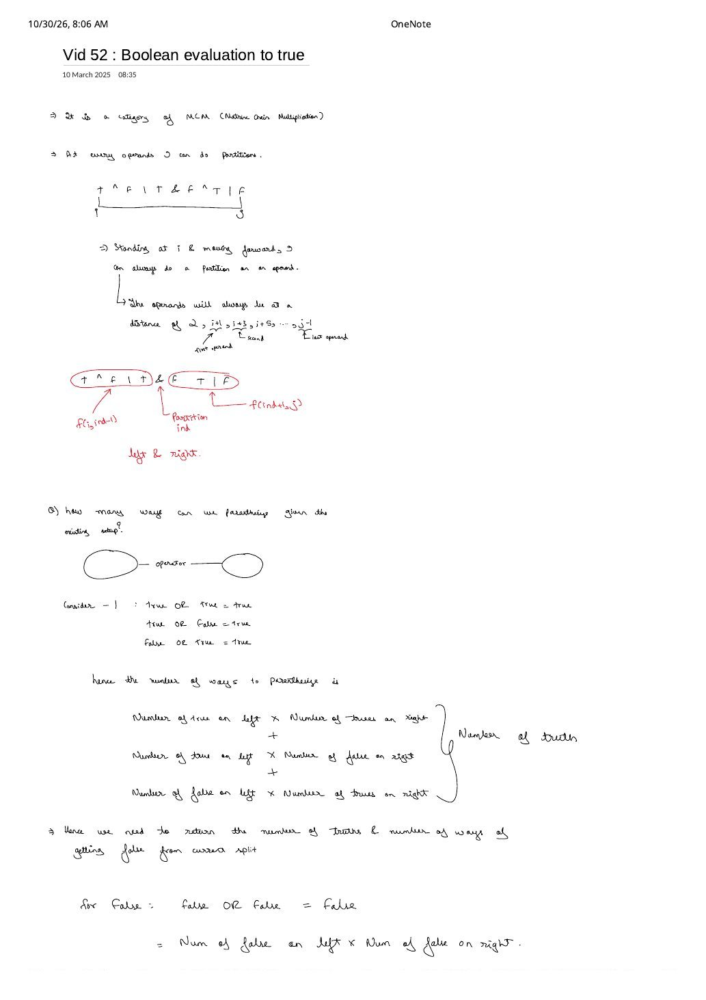
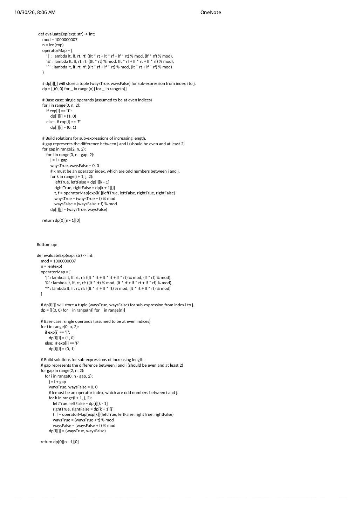

DP-52: Boolean Evaluation to True — Partition DP with Dual (True, False) Counts
Expanded from handwritten competitive coding study note: 15_Vid_52_Boolean_evaluation_to_true.pdf
Given an alternating boolean expression string $\text{exp}$ of odd length $n$—where even indices $0, 2, 4, \dots, n-1$ hold operands 'T' or 'F' and odd indices $1, 3, 5, \dots, n-2$ hold bitwise operators '&' (AND), '|' (OR), or '^' (XOR)—count how many full parenthesizations evaluate to True modulo $10^9 + 7$ (Code360 Boolean Evaluation / Striver DP-52 / LeetCode 1547–312 Partition DP family).
1. Partition Geometry: Stepping $+2$ Across Odd Operator Indices
Just like Matrix Chain Multiplication in our MIT DP Framework note, any parenthesization of sub-expression $\text{exp}[i \dots j]$ ($i, j$ both even) has a unique last operator evaluated at some odd index $k \in \{i + 1, i + 3, \dots, j - 1\}$, splitting the interval cleanly into independent left operand slice $[i \dots k - 1]$ and right operand slice $[k + 1 \dots j]$:
15_Vid_52 p.1 on $\texttt{T \^{} F | T \& F \^{} T | F}$: every valid split occurs on an operator at $k = i + 1, i + 3, \dots, j - 1$.2. Why State $(i, j)$ Must Track Both True and False Ways
State Augmentation Insight (Page 1)
Even though the problem only asks for the number of ways the whole expression evaluates to True, sub-expressions evaluating to False actively create True outcomes! Look at the OR analysis on page 1:
And for XOR, $\text{True} \oplus \text{False} = \text{True}$ and $\text{False} \oplus \text{True} = \text{True}$. Therefore, every subproblem $[i \dots j]$ must maintain both counts—either as a 3D state $dp[i][j][\text{isTrue} \in \{0, 1\}]$ or as a tuple $(w_T, w_F) = dp[i][j]$!
Operator exp[k] |
Ways to Get True ($t$) |
Ways to Get False ($f$) |
|---|---|---|
OR ('|') |
$l_T \cdot r_T + l_T \cdot r_F + l_F \cdot r_T$ | $l_F \cdot r_F$ |
AND ('&') |
$l_T \cdot r_T$ | $l_T \cdot r_F + l_F \cdot r_T + l_F \cdot r_F$ |
XOR ('^') |
$l_T \cdot r_F + l_F \cdot r_T$ | $l_T \cdot r_T + l_F \cdot r_F$ |
Sanity invariant: Notice that for every operator, $t + f = (l_T + l_F)(r_T + r_F)$! Consequently, if an expression has $m = \frac{n + 1}{2}$ operands, $dp[0][n - 1].T + dp[0][n - 1].F$ always equals the $(m - 1)^{\text{th}}$ Catalan number $C_{m - 1} = \frac{1}{m}\binom{2m - 2}{m - 1}$!
3. Step-by-Step Interval Dry Run on "T|T&F^T"
Tracing $\text{exp} = \texttt{"T|T\&F\^{}T"}$ ($n = 7$, $m = 4$ operands $\implies C_3 = 5$ total parenthesizations)
- Gap $0$ (single operands, $i == j$): $dp[0][0] = (1, 0)$, $dp[2][2] = (1, 0)$, $dp[4][4] = (0, 1)$, $dp[6][6] = (1, 0)$.
- Gap $2$ (1 operator):
- $[0..2]$ ($\texttt{T|T}$): $(1,0) \mathbin{|} (1,0) = (1, 0)$
- $[2..4]$ ($\texttt{T\&F}$): $(1,0) \mathbin{\&} (0,1) = (0, 1)$
- $[4..6]$ ($\texttt{F\^{}T}$): $(0,1) \mathbin{\oplus} (1,0) = (1, 0)$
- Gap $4$ (2 operators):
- $[0..4]$ ($\texttt{T|T\&F}$): $k=1$ (
'|') gives $(1,0) \mathbin{|} (0,1) = (1, 0)$; $k=3$ ('&') gives $(1,0) \mathbin{\&} (0,1) = (0, 1)$ $\implies dp[0][4] = (1, 1)$. - $[2..6]$ ($\texttt{T\&F\^{}T}$): $k=3$ (
'&') gives $(1,0) \mathbin{\&} (1,0) = (1, 0)$; $k=5$ ('^') gives $(0,1) \mathbin{\oplus} (1,0) = (1, 0)$ $\implies dp[2][6] = (2, 0)$.
- $[0..4]$ ($\texttt{T|T\&F}$): $k=1$ (
- Gap $6$ (full string $[0..6]$):
- $k=1$ (
'|'): $(1, 0) \mathbin{|} (2, 0) = (2, 0)$ - $k=3$ (
'&'): $(1, 0) \mathbin{\&} (1, 0) = (1, 0)$ - $k=5$ (
'^'): $(1, 1) \mathbin{\oplus} (1, 0) = (1, 1)$
True! - $k=1$ (
4. C++ Gap-Stepping 3D Partition DP Implementation
#include <bits/stdc++.h>
using namespace std;
const long long MOD = 1000000007LL;
int evaluateExp(const string& exp) {
int n = (int)exp.size();
// dp[i][j][0] = waysFalse, dp[i][j][1] = waysTrue
vector<vector<array<long long, 2>>> dp(n, vector<array<long long, 2>>(n, {0, 0}));
for (int i = 0; i < n; i += 2) {
dp[i][i][1] = (exp[i] == 'T');
dp[i][i][0] = (exp[i] == 'F');
}
for (int gap = 2; gap < n; gap += 2) { // Increasing even gap j - i
for (int i = 0; i < n - gap; i += 2) { // Even start operand index i
int j = i + gap; // Even end operand index j
long long waysT = 0, waysF = 0;
for (int k = i + 1; k < j; k += 2) { // Odd operator index k
long long lT = dp[i][k - 1][1], lF = dp[i][k - 1][0];
long long rT = dp[k + 1][j][1], rF = dp[k + 1][j][0];
if (exp[k] == '&') {
waysT = (waysT + lT * rT) % MOD;
waysF = (waysF + lT * rF + lF * rT + lF * rF) % MOD;
} else if (exp[k] == '|') {
waysT = (waysT + lT * rT + lT * rF + lF * rT) % MOD;
waysF = (waysF + lF * rF) % MOD;
} else if (exp[k] == '^') {
waysT = (waysT + lT * rF + lF * rT) % MOD;
waysF = (waysF + lT * rT + lF * rF) % MOD;
}
}
dp[i][j] = {waysF, waysT};
}
}
return (int)dp[0][n - 1][1];
}5. Complexity Proof & Modulo Overflow Guard
- Time Complexity: With $m = \frac{n+1}{2}$ operands, there are $\frac{m(m+1)}{2} \approx \frac{n^2}{8}$ even-indexed intervals $[i \dots j]$, and each tries $\le m - 1 \approx \frac{n}{2}$ odd operator splits $k$ $\implies \Theta(n^3)$ time (with a small $\approx \frac{1}{48}$ constant factor because all three loops step by $+2$!).
- Space Complexity: $\Theta(n^2)$ for the $n \times n \times 2$ table (no recursion stack in bottom-up).
- 64-Bit Multiplication Overflow in C++: Even when
lTandrFare reduced modulo $10^9 + 7$, a triple sum likelT * rF + lF * rT + lF * rFreaches $3 \times 10^{18}$—safely belowLLONG_MAX($\approx 9.22 \times 10^{18}$), only iflT, lF, rT, rFare typedlong long! Storing them in 32-bitintoverflowslT * rTimmediately!
From the Handwritten Notes
View original handwritten page — Vid 52 Boolean Evaluation (Page 1): Odd-Index Partitions & OR Truth/Falsehood Counting


15_Vid_52_Boolean_evaluation_to_true.pdf p.1 — Stepping $+2$ over operators in $\texttt{T \^{} F | T \& F \^{} T | F}$ and proving why both True and False counts must be returned.View original handwritten page — Vid 52 Boolean Evaluation (Page 2): Bottom-Up Gap-Stepping Python Implementation


15_Vid_52_Boolean_evaluation_to_true.pdf p.2 — Complete $O(n^3)$ Python tuple tabulation using operatorMap modulo $10^9 + 7$.